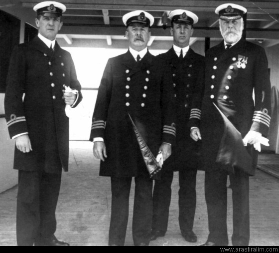

.jpg)
Titanic, White Star Line şirketine ait Olympic sınıfı bir yolcu gemisiydi. Harland and Wolff (Belfast, İrlanda) tersanelerinde üretilmiştir. 15 Nisan 1912 gecesi daha ilk seferinde bir buz dağına çarpmış ve yaklaşık iki saat kırk dakika içinde Kuzey Atlantik'in buzlu sularına gömülmüştür. 1912'de yapımı tamamlandığında dünyanın en büyük buharlı yolcu gemisiydi. Batışı 1.514 kişinin ölümüyle sonuçlandı ve dünya savaşları dışındaki en büyük deniz felaketlerinden biri olarak tarihe geçti.
Titanic`in batışının yol açtığı büyük can kaybı oranı birçok nedene bağlanmaktaydı ama zamanla öne çıkan gerçek, geminin herkese yetecek kadar filika taşımıyor olmasıydı. Titanic`in tam kapasitesi 3,547 kişi olmasına rağmen gemideki filikaların toplam kapasitesi 1,178 kişiydi. Ayrıca kaza sırasında kadınlara ve çocuklara öncelik tanındığı için toplamda ölen erkek sayısı da çok orantısızdı.
Titanic`te zamanında mevcut olan en ileri teknolojiler kullanılmıştı. Birçok insan tarafından "batmaz gemi" olduğuna inanılıyordu ve bu inanış batmadan önce bu şekilde tanımlanmış ve lanse edilmişti. Bu derece ileri teknoloji ve eğitimli mürettebata rağmen batması birçok insanı şoke etti. Medya Titanic'in ünlü kurbanları ve batışı ile ilgili efsaneleri sürekli gündeme getirmeye devam etti. Bu tartışmaların sonucu denizcilik kanunun değişmesi oldu.
Amerikan donanmasından emekli Robert Ballard'ın geminin enkazını 1985'de bulması Titanic'e olan ilgiyi artırdı ve bu ilgi günümüze kadar devam etti.
